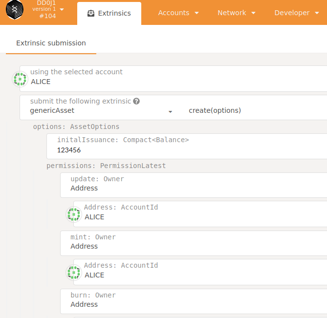
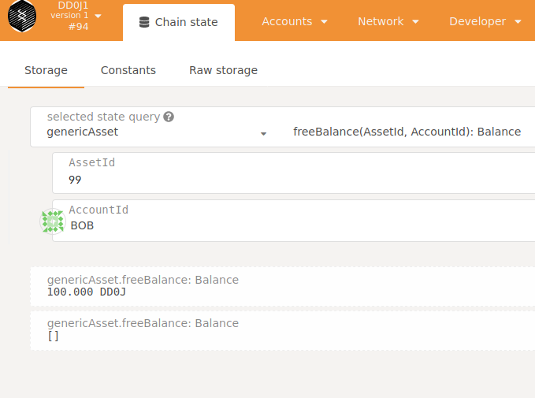

2020 09
2020-0913
DD0J1 dev testnet


tcpdug/chains/sntpl-2.0.0-rc6-1$ target/debug/node-template purge-chain --dev
tcpdug/chains/sntpl-2.0.0-rc6-1$ target/debug/node-template --dev
2020-09-13 16:01:45.285 main WARN sc_cli::commands::run_cmd Running in --dev mode, RPC CORS has been disabled.
2020-09-13 16:01:45.285 main INFO sc_cli::runner Substrate Node
2020-09-13 16:01:45.285 main INFO sc_cli::runner ✌️ version 2.0.0-rc6-75c8517-x86_64-linux-gnu
2020-09-13 16:01:45.285 main INFO sc_cli::runner ❤️ by Substrate DevHub <https://github.com/substrate-developer-hub>, 2017-2020
2020-09-13 16:01:45.285 main INFO sc_cli::runner 📋 Chain specification: DD0J1
2020-09-13 16:01:45.285 main INFO sc_cli::runner 🏷 Node name: humorous-mark-0633
2020-09-13 16:01:45.285 main INFO sc_cli::runner 👤 Role: AUTHORITY
2020-09-13 16:01:45.285 main INFO sc_cli::runner 💾 Database: RocksDb at /home/foo/.local/share/node-template/chains/dev/db
2020-09-13 16:01:45.285 main INFO sc_cli::runner ⛓ Native runtime: node-template-1 (node-template-1.tx1.au1)
2020-09-13 16:01:45.578 main INFO sc_service::client::client 🔨 Initializing Genesis block/state (state: 0x8acb…319b, header-hash: 0x29fd…0203)
2020-09-13 16:01:45.580 main INFO afg 👴 Loading GRANDPA authority set from genesis on what appears to be first startup.
2020-09-13 16:01:45.732 main INFO sc_consensus_slots ⏱ Loaded block-time = 6000 milliseconds from genesis on first-launch
2020-09-13 16:01:45.734 main INFO sub-libp2p 🏷 Local node identity is: 12D3KooWEXv1Uycg2JAfPF8W5517vd3E3i4QcqMUUCCMGyNvvGvp (legacy representation: QmXHs2s7QTY6zGhehnQBaaqb3ZyDZjKHEzmiJK1333P3Wf)
2020-09-13 16:01:45.941 main INFO sc_service::builder 📦 Highest known block at #0
2020-09-13 16:01:45.942 tokio-runtime-worker INFO substrate_prometheus_endpoint::known_os 〽 Prometheus server started at 127.0.0.1:9615
2020-09-13 16:01:48.142 tokio-runtime-worker INFO sc_basic_authorship::basic_authorship 🙌 Starting consensus session on top of parent 0x29fd8c02b8245939800299eb5f05b6be53bc08a4038e7a6fa218646852f10203
2020-09-13 16:01:48.241 tokio-blocking-driver INFO sc_basic_authorship::basic_authorship 🎁 Prepared block for proposing at 1 [hash: 0x0ddbf622c96a0505999e1bee913986b75d95da4f2d3b6bd5601487e662500789; parent_hash: 0x29fd…0203; extrinsics (1): [0x4c72…5fde]]
2020-09-13 16:01:48.316 tokio-runtime-worker INFO sc_consensus_slots 🔖 Pre-sealed block for proposal at 1. Hash now 0xb247b277111ed2826d8f073fac6aa48cf4327a949e9297050aeeb17ae0a88c04, previously 0x0ddbf622c96a0505999e1bee913986b75d95da4f2d3b6bd5601487e662500789.
2020-09-13 16:01:48.317 tokio-runtime-worker INFO substrate ✨ Imported #1 (0xb247…8c04)
2020-09-13 16:01:50.947 tokio-runtime-worker INFO substrate 💤 Idle (0 peers), best: #1 (0xb247…8c04), finalized #0 (0x29fd…0203), ⬇ 0 ⬆ 0
2020-09-13 16:01:54.080 tokio-runtime-worker INFO sc_basic_authorship::basic_authorship 🙌 Starting consensus session on top of parent 0xb247b277111ed2826d8f073fac6aa48cf4327a949e9297050aeeb17ae0a88c04
2020-09-13 16:01:54.084 tokio-blocking-driver INFO sc_basic_authorship::basic_authorship 🎁 Prepared block for proposing at 2 [hash: 0xd820b547f6c22d061710424b35d913e80433c3d33dbfc6a4df9266e4e4dabb5b; parent_hash: 0xb247…8c04; extrinsics (1): [0x6389…247c]]
2020-09-13 16:01:54.158 tokio-runtime-worker INFO sc_consensus_slots 🔖 Pre-sealed block for proposal at 2. Hash now 0x1fcfffdfaa78fba345483cbd57c333fefb066d61bcefcb180f65d64cf14d0002, previously 0xd820b547f6c22d061710424b35d913e80433c3d33dbfc6a4df9266e4e4dabb5b.
2020-09-13 16:01:54.159 tokio-runtime-worker INFO substrate ✨ Imported #2 (0x1fcf…0002)
2020-09-13 16:01:55.948 tokio-runtime-worker INFO substrate 💤 Idle (0 peers), best: #2 (0x1fcf…0002), finalized #0 (0x29fd…0203), ⬇ 0 ⬆ 0
2020-09-13 16:02:00.086 tokio-runtime-worker INFO sc_basic_authorship::basic_authorship 🙌 Starting consensus session on top of parent 0x1fcfffdfaa78fba345483cbd57c333fefb066d61bcefcb180f65d64cf14d0002
2020-09-13 16:02:00.092 tokio-blocking-driver INFO sc_basic_authorship::basic_authorship 🎁 Prepared block for proposing at 3 [hash: 0x310c6457f43aad2d9dcb5e647d54c69806bdbbc55c3137e162ed1e3b67e99588; parent_hash: 0x1fcf…0002; extrinsics (1): [0x578f…adba]]
2020-09-13 16:02:00.172 tokio-runtime-worker INFO sc_consensus_slots 🔖 Pre-sealed block for proposal at 3. Hash now 0x0d8b308561d6986fab59870aed55062f8aee027609fd924edeebd196d35383d0, previously 0x310c6457f43aad2d9dcb5e647d54c69806bdbbc55c3137e162ed1e3b67e99588.
2020-09-13 16:02:00.173 tokio-runtime-worker INFO substrate ✨ Imported #3 (0x0d8b…83d0)
2020-09-13 16:02:00.948 tokio-runtime-worker INFO substrate 💤 Idle (0 peers), best: #3 (0x0d8b…83d0), finalized #0 (0x29fd…0203), ⬇ 0 ⬆ 0
2020-09-13 16:02:05.951 tokio-runtime-worker INFO substrate 💤 Idle (0 peers), best: #3 (0x0d8b…83d0), finalized #1 (0xb247…8c04), ⬇ 0 ⬆ 0
2020-09-13 16:02:06.082 tokio-runtime-worker INFO sc_basic_authorship::basic_authorship 🙌 Starting consensus session on top of parent 0x0d8b308561d6986fab59870aed55062f8aee027609fd924edeebd196d35383d0
2020-09-13 16:02:06.087 tokio-blocking-driver INFO sc_basic_authorship::basic_authorship 🎁 Prepared block for proposing at 4 [hash: 0xf1210a9be44be3c3834bb1230fd23e38478f86b1bdcb53d8c6148caffa3ba9a7; parent_hash: 0x0d8b…83d0; extrinsics (1): [0xcf37…b69a]]
2020-09-13 16:02:06.161 tokio-runtime-worker INFO sc_consensus_slots 🔖 Pre-sealed block for proposal at 4. Hash now 0x65c9786710a5086451ff83d003cc1e31d182c2b703900825473e44c3354377fb, previously 0xf1210a9be44be3c3834bb1230fd23e38478f86b1bdcb53d8c6148caffa3ba9a7.
2020-09-13 16:02:06.163 tokio-runtime-worker INFO substrate ✨ Imported #4 (0x65c9…77fb)
2020-09-13 16:02:10.952 tokio-runtime-worker INFO substrate 💤 Idle (0 peers), best: #4 (0x65c9…77fb), finalized #2 (0x1fcf…0002), ⬇ 0 ⬆ 0
2020-09-13 16:02:12.114 tokio-runtime-worker INFO sc_basic_authorship::basic_authorship 🙌 Starting consensus session on top of parent 0x65c9786710a5086451ff83d003cc1e31d182c2b703900825473e44c3354377fb
2020-0912
- chains/sntpl-2.0.0-rc6-1 從 Release v2.0.0-rc6+1 · substrate-developer-hub/substrate-node-template · GitHub 下載。
pallet-generic-asset
- Search · pallet-generic-asset
- definex/lib.rs at 8d039864767909f555ba67090c5b8dc0cc7c760c · y2labs-0sh/definex
- tcp_server/lib.rs at 70330f2e3562d437a8457947276ec3320f3ed2e1 · TingALin/tcp_server